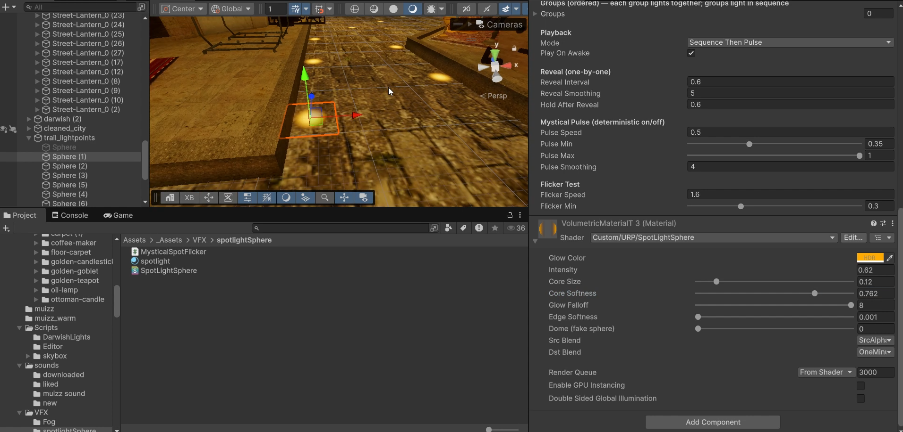
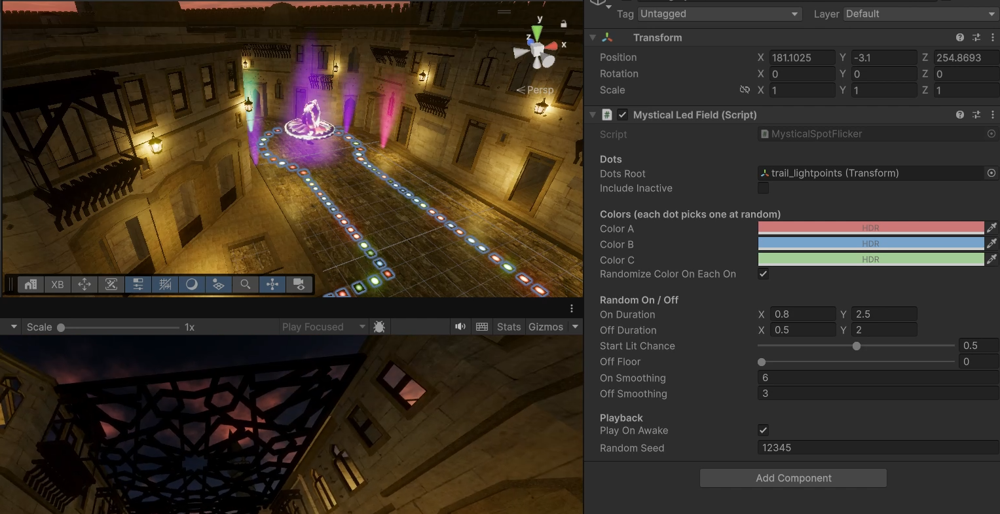
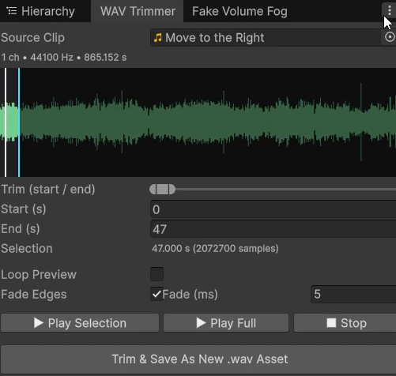

🐾
Youkii
Home
Contact
🌓
🌓
Home
Contact
Echos - Streets of Cairo
Unity
XR
Storytelling
About
Immersive VR experience designed to let user experience the atmosphere, architecture and culutre of
Old Cairo
freely
Created in Collaboration with Artist Amr Ali &
Mena Safwat
My Contributions
XR Development
Technical Art (Shaders & VFX)
Level Design
Light Baking & Post Processing
3D Asset Optimization on Blender
Performance Optimization for standalone VR
Sound Design and Mixing in Unity
Technical Challenges
Rendering a dense historic environment while maintaining smooth performance on standalone VR
creating atmospheric lighting using custom shaders instead of expensive real-time effects
Optimizing hundreds of environment assets through mesh optimization, batching, and rendering improvements on Blender & Unity
Designing a free-exploration experience that encourages users to discover the environment naturally
Created volumetric Lighting shader
Created custom shader for smooth Fog Particle system
Behind The Scenes
Spotlights Shader:

Colored Spotlights:

Wav Trimmer - Custom Editor Tool:

Custom Shaders
Sound Design
© 2026 Youkii — Built with ☕ and Passion